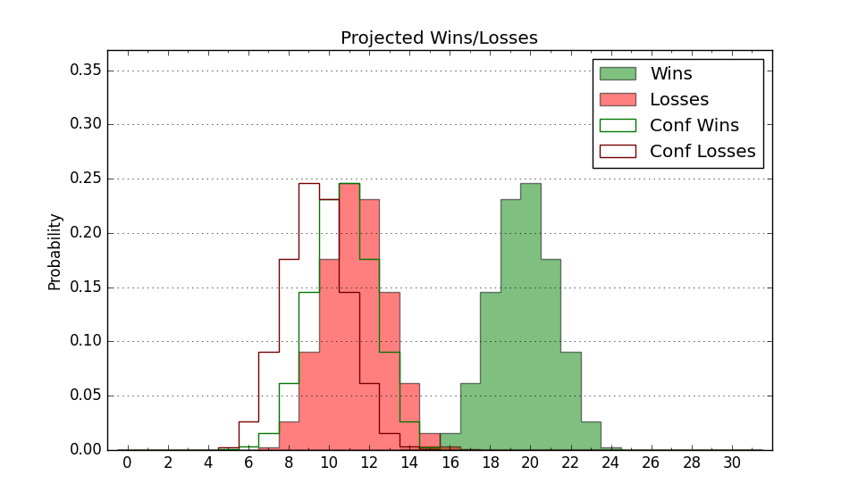

| Home | Game Probabilities | Conferences | Preseason Predictions | Odds Charts | NCAA Tournament |
| City: | Charlotte, North Carolina | |
| Conference: | Conference USA (5th)
| |
| Record: | 4-5 (Conf) 13-7 (Overall) | |
| Ratings: | Comp.: 8.7 (92nd) Net: 9.1 (93rd) Off: 108.4 (66th) Def: 99.3 (127th) SoR: 2.4 (126th) |
| Remaining | ||||||
|---|---|---|---|---|---|---|
| Date | Opponent | Win Prob | Pred. | |||
| 1/26 | @ Rice (145) | 50.0% | L 70-71 | |||
| 2/2 | FIU (256) | 90.9% | W 73-58 | |||
| 2/4 | Florida Atlantic (31) | 41.1% | L 63-65 | |||
| 2/9 | @ UTEP (176) | 56.4% | W 59-58 | |||
| 2/11 | @ North Texas (57) | 24.3% | L 51-57 | |||
| 2/16 | Western Kentucky (168) | 81.0% | W 69-60 | |||
| 2/18 | @ Louisiana Tech (147) | 50.1% | W 66-65 | |||
| 2/23 | North Texas (57) | 52.3% | W 55-54 | |||
| 2/25 | Rice (145) | 77.3% | W 74-66 | |||
| 3/2 | @ UTSA (324) | 84.8% | W 72-61 | |||
| 3/4 | UAB (80) | 61.4% | W 72-69 | |||
| Previous | Game Score | |||||
| Date | Opponent | Win Prob | Result | Off | Def | Net |
| 11/7 | Coppin St. (302) | 93.4% | W 82-59 | 0.3 | 8.7 | 8.9 |
| 11/14 | Md Eastern Shore (292) | 92.3% | W 80-47 | 7.1 | 19.6 | 26.7 |
| 11/17 | (N) Boise St. (17) | 23.8% | W 54-42 | -8.6 | 39.6 | 30.9 |
| 11/18 | (N) Tulsa (253) | 83.9% | W 68-65 | -1.4 | -10.8 | -12.2 |
| 11/20 | (N) Massachusetts (179) | 70.8% | L 54-60 | -19.6 | -4.4 | -24.0 |
| 11/23 | @Detroit (200) | 61.1% | L 49-70 | -29.0 | -12.5 | -41.5 |
| 11/26 | Presbyterian (331) | 95.3% | W 69-42 | 3.2 | 11.7 | 14.9 |
| 11/29 | @Davidson (157) | 53.3% | W 68-66 | 0.0 | 5.0 | 5.0 |
| 12/2 | Appalachian St. (197) | 83.9% | W 71-62 | 9.4 | -9.6 | -0.2 |
| 12/10 | Detroit (200) | 84.2% | W 82-80 | 4.5 | -13.2 | -8.7 |
| 12/17 | @Monmouth (359) | 94.6% | W 80-46 | 18.7 | 6.9 | 25.6 |
| 12/22 | @UAB (80) | 31.8% | L 68-76 | -4.8 | -1.8 | -6.6 |
| 12/29 | Middle Tennessee (105) | 69.1% | W 82-67 | 29.3 | -11.4 | 17.9 |
| 12/31 | Louisiana Tech (147) | 77.4% | W 68-66 | -2.1 | -2.7 | -4.7 |
| 1/5 | @FIU (256) | 74.6% | L 60-62 | -12.9 | -5.9 | -18.8 |
| 1/7 | @Florida Atlantic (31) | 17.0% | L 67-71 | 15.0 | -13.6 | 1.4 |
| 1/14 | UTSA (324) | 95.0% | W 72-54 | -11.8 | 10.6 | -1.2 |
| 1/16 | UTEP (176) | 81.5% | L 58-60 | -3.0 | -12.9 | -15.9 |
| 1/19 | @Middle Tennessee (105) | 39.7% | L 58-62 | -6.3 | 8.3 | 2.0 |
| 1/21 | @Western Kentucky (168) | 55.5% | W 75-71 | 13.8 | -10.3 | 3.5 |
| Stats & Trends | |||||
|---|---|---|---|---|---|
| Current | Day | Week | Month | Season | |
| Composite | 8.7 | +0.7 | +0.3 | -1.0 | +8.4 |
| Comp Rank | 92 | +6 | -1 | -11 | +63 |
| Net Efficiency | 9.1 | +0.7 | -0.1 | -2.9 | -- |
| Net Rank | 93 | +1 | -4 | -21 | -- |
| Off Efficiency | 108.4 | +0.8 | +1.1 | +0.5 | -- |
| Off Rank | 66 | +4 | +5 | +2 | -- |
| Def Efficiency | 99.3 | -0.1 | -1.2 | -3.4 | -- |
| Def Rank | 127 | +7 | -8 | -37 | -- |
| SoS Rank | 253 | -2 | +32 | +19 | -- |
| Exp. Wins | 19.7 | +0.2 | -0.6 | -1.6 | +3.6 |
| Exp. Conf Wins | 10.7 | +0.2 | -0.6 | -1.6 | +1.1 |
| Conf Champ Prob | 0.1 | +0.0 | -0.9 | -5.2 | -2.5 |

| Advanced Stats | ||
|---|---|---|
| Stat | Value | Rank |
| Off Eff FG % | 0.551 | 23 |
| Off Ast Ratio | 0.168 | 34 |
| Off ORB% | 0.208 | 324 |
| Off TO Rate | 0.140 | 52 |
| Off FT Ratio | 0.246 | 338 |
| Def Eff FG % | 0.495 | 151 |
| Def Ast Ratio | 0.128 | 75 |
| Def ORB% | 0.220 | 39 |
| Def TO Rate | 0.151 | 227 |
| Def FT Ratio | 0.262 | 68 |